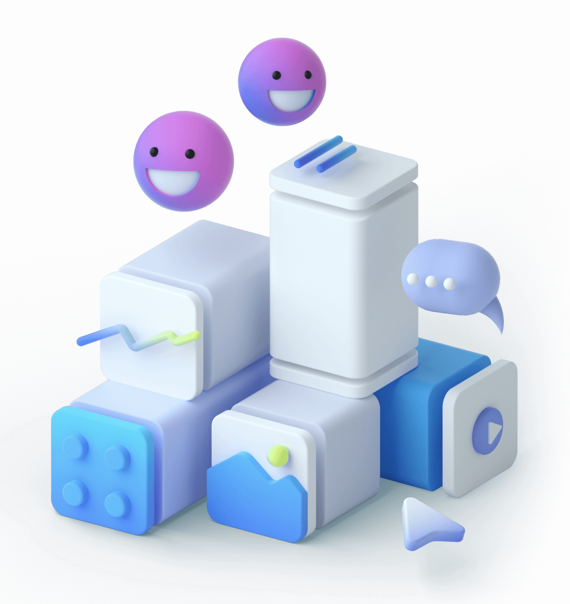

The future of storytelling is interactive
Fast, interactive presentations that are effortlessly beautiful. For founders, modern teams and the world’s best storytellers.

Skip the design guesswork
Is spending hours finessing slides worth your time? Limitless font, colour and positioning choices sound great but only lead to hours of clueless, rage formatting! By pre-designing beautiful ‘blocks’, we have done the messy work for you so you can focus on your most powerful story.
Engage in conversations
Audience zoning out of presentations? The truth is, slides are not built for discussions and decision making. Make your team feel a part of the discussion with interactive conversations, polls and live reactions. Hook, excite and move your audience to make your stories memorable - live and async.

Bring your work to life
Your work happens across many different tools everyday. The last thing you need is spending more time recreating your work on slides with static shapes and text. Turn your stories into a window to your work by connecting seamlessly live-linking with all your tools. Share context delightfully.
Experience the future of storytelling
For founders, modern teams and the world’s best storytellers.
Apply for early access